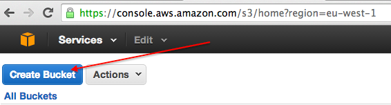
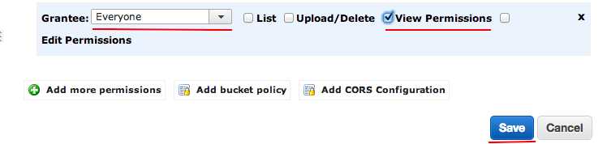
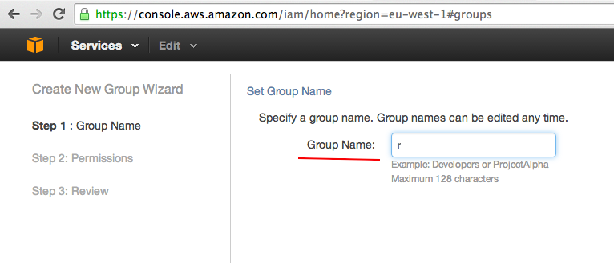
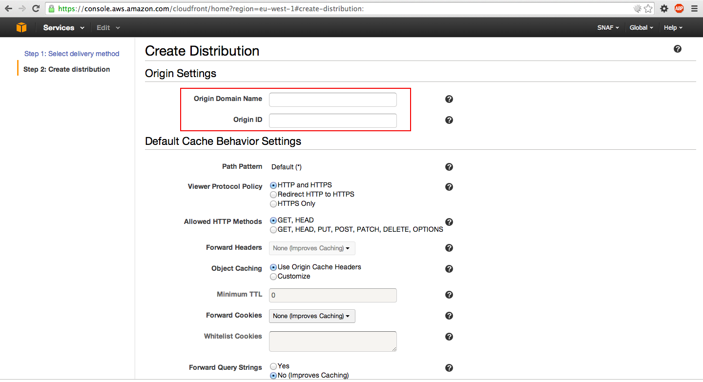
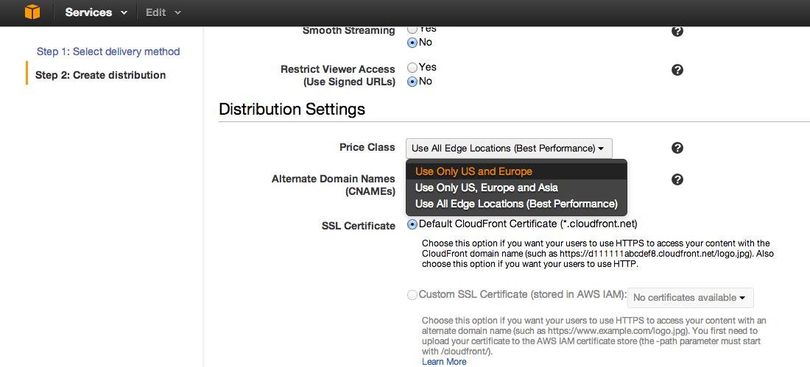
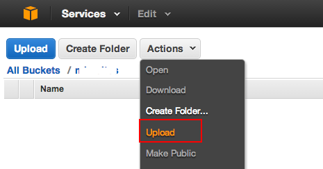
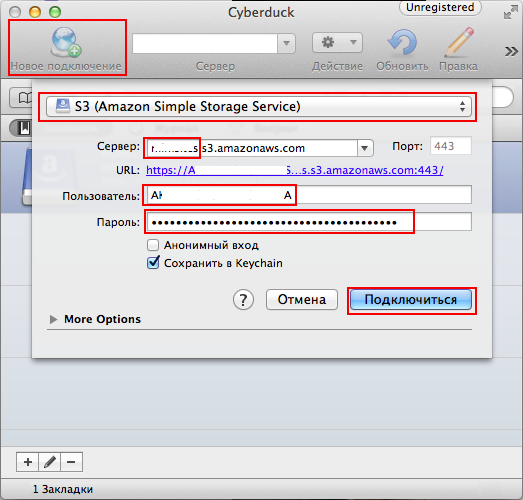

Подготовка
Все шаги перечисленные ниже производятся в панели управления Amazon Web Services.
S3
Создание бакета
Заходим в консоль Амазона, переходим в настройки S3.
Чтобы создать бакет нажимаем на Create Bucket:

В открывшемся окне вводим название бакета и выбираем регион Ireland (он ближе всего к нашим серверам).

Имя бакета должно быть уникальным, в соответствии с ним создается поддомен вида bucketname.s3.amazonaws.com, по которому будут доступны наши файлы. Жмем Create.
Если имя бакета не уникально, то будет выведена ошибка.
После создания новый бакет появится в списке слева.
Открытие публичного доступа на чтение
Чтобы файлы, находящиеся в бакете были публично доступны по прямой ссылке необходимо добавить глобальное разрешение в меню Properties выбранного бакета.

По умолчанию авторизованному супер-пользователю доступны все действия с бакетом и объектами в нем.

Чтобы добавить разрешение на чтение файлов для анонимных пользователей выбираем Add more permissions, в поле Grantee выставляем Everyone и ставим флаг View Permissions. Сохраняем изменения.

Настройка доступа
Для того чтобы работать с API Amazon Web Services необходимо создать группу, выставить групповые права, создать пользователя и добавить его в группу.
Для управления пользователями в Amazon используется сервис Identity and Access Management (IAM).

Создание группы
Создаем группу перейдя в панель управления группами IAM и нажав Create New Group.

Вводим имя группы.

Далее необходимо указать, какие действия и над какими объектами разрешены пользователям группы.
Нам потребуются разрешения на получение списка файлов, чтение, загрузку, удаление и изменение прав файлов.
Этим требованиям соответствуют права:
- ListBucket
- GetObject
- PutObject
- DeleteObject
- GetObjectAcl
- PutObjectAcl
Чтобы сгенерировать файл с правами, выбираем пункт Policy Generator.

Указываем сервис Amazon S3 и выбираем указанные выше действия в списке Actions.
В поле Amazon Resource Name (ARN) нужно указать путь до ресурса, в нашем случае это бакет S3.
Название ресурса указывается в формате arn:aws:SERVICE_NAME:::RESOURCE_NAME,
соответсвенно SERVICE_NAME - s3, а RESOURCE_NAME - название бакета, выбранное при создании.
Допустим бакет называется mybucket, в таком случае ARN будет arn:aws:s3:::mybucket.

В результате сгенерируется файл с правами, но нам необходимо добавить одну строчку, чтобы все заработало.

В разделе Resource необходимо продублировать строчку с ресурсом "arn:aws:s3:::RESOURCE_NAME", но добавив в конце /*. Таким образом указанные права будут распространяться не только на сам ресурс (бакет S3 в нашем случае), но так же и на все его содержимое (файлы). В итоге у нас должно быть два ресурса - "arn:aws:s3:::RESOURCE_NAME" и "arn:aws:s3:::RESOURCE_NAME/*", где RESOURCE_NAME - название нашего бакета.
Создание пользователя
Переходим в раздел управления пользователями и нажимаем Create New Users.

Вводим имя пользователя, убеждаемся что стоит флаг Generate an access key for each user и нажимаем Create.

В скрытом поле указаны два ключа - Access Key ID и Secret Access Key. По сути это логин и пароль для работы с API. Сохраняем их в надежном месте.

Добавление пользователя в группу
Выбираем созданного пользователя и добавляем его в группу.


CloudFront
Схема работы
CloudFront - это CDN от Amazon'а. По сути это географически распределенный файловый кеш.
Схема его работы следующая.
Исходный файл существует в единственном экземпляре и хранится в бакете S3, например в Ирландии. В свою очередь у нас настроен CloudFront с серверами в Северной Америке и Европе. В зависимости от того, где находится пользователь запрашивающий файл, он с помощью geo DNS попадает на ближайший к нему сервер CloudFront'а. Сервер сначала ищет файл в своем кеше, и если он находится (cache hit), то сразу отдает его пользователю. В случае, если файла в кеше нет (cache miss), то CloudFront идет к источнику (origin), в нашем случае это бакет S3, скачивает и сохраняет в кеш.
Соответственно вместо ссылки на файл в бакете (http://mybucket.s3.amazonaws.com/boobs.jpg) мы должны давать пользователю ссылку на CloudFront (http://adns8979ascnvhasd3.cloudfront.com/boobs.jpg).
Создание дистрибуции
Переходим в панель управления CloudFront.

Создаем дистрибуцию.

Выбираем тип Web.

В разделе Origin Settings указывается источник, где лежат исходные файлы.
В выпадающем списке Origin Domain Name выбираем созданный нами бакет вида BUCKET_NAME.s3.amazonaws.com.
Значение в поле Origin ID будет сгенерировано автоматически.

Оставляем все по дефолту кроме поля Price Class в разделе Distribution Settings.

В зависимости от требований можно выбрать в скольких регионах будут находится CDN серверы, соответственно чем больше серверов, тем выше плата за использование. Чтобы сократить стоимость укажем Use Only US and Europe. Если выбрать Use All Edge Locations, то наши файлы будут кешироваться на всех континентах. Полный список регионов указан здесь.
В поле Alternate Domain Names (CNAMEs) можно указать свой красивый домен, который будет использоваться в публичных ссылках на файлы, например cdn.example.com. Об этом чуть позже.
Создаем дистрибуцию нажав Create Distribution.
В списке мы видим, что наша дистрибуция находится в статусе In Progress. Когда статус будет Deployed мы сможем протестировать работу.

Добавление нашего сервера в дистрибуцию
Дистрибуцию нужно настроить таким образом, чтобы CloudFront в случае, если файла по какой-то причине еще нет на S3, брал его с нашего исходного сервера.
Для этого выберем созданную дистрибуцию и отредактируем настройки нажав Distribution Settings.
Во вкладке General указан созданный для дистрибуции домен вида xxxxxxxx.cloudfront.com (поле Domain Name).

Список исходных серверов настраивается в вкладке Origins.

Добавим наш сервер в качестве исходного.

В поле Origin Domain Name указываем домен, по которому доступен наш сервер. Поле Origin ID подставится автоматически. Сохраняем нажав Create.
Во вкладке Behaviors указаны правила, по которым CloudFront будет искать файл, если его нет в кеше. Создадим новое правило для нашего сервера.

Поле Path Pattern определяет маску файла для правила. В нашем случае интересуют все файлы, поэтому указываем *.

Это фича нужна, когда например у нас файлы .css лежат не на том же сервере, где картинки .jpg Тогда для одного сервера указываем правило *.css, для другого *.jpg. Подробнее про формат маски можно почитать здесь.
В выпадающем списке Origin выбираем добавленный на предыдущем шаге сервер.
Сохраняем конфигурацию и переходим к тестированию.
Тестирование конфигурации
S3+CloudFront
Для начала проверим, что правильно настроена связка S3+CloudFront.
Переходим в панель управления S3, в левом меню выбираем созданный нами бакет, в выпадающем меню Actions выбираем Upload.

Добавляем файл Add Files.

Переходим во вкладку Set Details и далее в Set Permissions и выставляем флаг Make everything public, загружаем Start Upload.

Проверяем, что файл доступен по прямой ссылке на S3 http://BUCKET_NAME.s3.amazonaws.com/elephpant.png, где BUCKET_NAME - название бакета.
Дальше проверяем, что файл доступен по ссылке на CloudFront xxxxxxxxxxx.cloudfront.net/elephpant.png.
Этот тест провалится, потому что у нас еще не настроен прокси. Об этом в следующем разделе.
Оглавление | Назад | Далее
Настройка прокси
В ситуации, когда файл находится на S3, но уже не доступен на нашем сервере, CloudFront, проверив файл на нашем сервере, сразу вернет 404 ошибку и не пойдет искать его на S3.
Этого можно избежать, проверяя в коде существование файла локально, и генерируя ссылку соответственно либо на наш сервер, либо на CDN. Но это потребует объемных изменений.
Чтобы избежать эту проблему, нужно прописать http proxy на нашем сервере.
Nginx proxy
Нам необходимо, чтобы nginx сначала пытался взять файл локально, а в случае, если файла нет, проксировал запрос на S3.
Для этого укажем путь до прокси в конфиге nginx'а в секции server:
http {
#...
server {
listen 80;
server_name example.com www.example.com;
# вместо images надо указать директорию, файлы из которой переносятся на S3
location ~ ^/images/(.*)$ {
# сначала файл берется локально и, если он не найден, выполняется директива s3
try_files $uri @s3;
}
# выполняется только если файл не найден
location @s3 {
# вместо example надо указать название реального бакета
set $s3_host 'example.s3.amazonaws.com';
set $s3_file '$1';
# для корректной работы необходимо выставить заголовки
proxy_set_header Host $s3_host;
proxy_set_header Authorization '';
proxy_hide_header x-amz-id-2;
proxy_hide_header x-amz-request-id;
proxy_hide_header Set-Cookie;
proxy_ignore_headers "Set-Cookie";
proxy_buffering off;
proxy_intercept_errors on;
proxy_redirect off;
proxy_pass http://$s3_bucket/images/$s3_file;
}
# остальные директивы location
}
}
Перезапускаем конфигурацию nginx'а:
$ service nginx reload
Проверка
Заходим в консоль управления S3. В нашем бакете создаем папку images. В нее загружаем файл, которого точно нет на нашем сервере в директории images. Открываем файл по ссылке на CloudFront. Файл должен открыться.
В этот момент CloudFront ищет файл в своем кеше, не обнаруживает его в кеше, посылает запрос на наш сервер, nginx ищет файл локально, не обнаруживает его, отправляет запрос на S3, получает файл и отправляет его обратно CloudFront'у, тот его кеширует и отдает клиенту.
Справедливости ради стоит заметить, что у этой схемы есть очевидный минус - наш сервер отправляет запрос на S3, чтобы забрать файл. Но делает он это только один раз, потому что все следующие разы клиенты получат ответ из кеша CloudFront'а.
Если мы посмотрим в веб-инспектор, то увидим специальный заголовок X-Cache, в котором CloudFront указывает, откуда загружен файл - из кеша или из источника. Первый раз файл всегда берется из источника (X-Cache: Miss from cloudfront). Перезагрузив страницу в этом заголовке будет значение X-Cache: Hit from cloudfront.
Перенаправление вместо прокси
Чтобы сократить издержки на проксирование запроса от CloudFront'а до S3 и обратно, можно просто перенаправлять запрос. Конфиг в таком случае выглядит так:
http {
#...
server {
listen 80;
server_name example.com www.example.com;
location ~ ^/images/(.*)$ {
try_files $uri @s3redirect;
}
location @s3redirect {
return 301 http://example.s3.amazonaws.com/images/$1; }
# остальные директивы location
}
}
В случае, если файл не найден, nginx ответит CloudFront'у редиректом (301 Moved permanently), CloudFront в свою очередь перенаправит клиента по новому URL'у.
Плюс - мы не тратим траффик на отправку файла CloudFront'у.
Минус - CloudFront закеширует не сам файл, а редирект на него, соответственно клиент получит файл прямиком с S3, который находится в единственном регионе, траффик с S3 дороже и скорость обычно медленнее. Вероятно что это конфигурация в результате окажется дороже, чем использование прокси.
Оглавление | Назад | Далее
Оглавление | Назад | Далее
Инструменты и библиотеки для работы с S3
Графические утилиты
Cyberduck
Легкая бесплатная программа для Windows и Mac OS X.

Создаем Новое подключение, выбираем S3, вводим полный путь до бакета в формате bucket.s3.amazonaws.com, в качестве имени пользователя вводим Access Key ID, в качестве пароля Secret Access Key, полученные на этапе подготовки.
Библиотеки
Python
Boto
Boto - библиотека на Python предоставляющая интерфейс для Amazon Web Services.
Публичный репозиторий - https://github.com/boto/boto
Документация - http://docs.pythonboto.org/en/latest
Единственное требование - Python 2.6/2.7, частично поддерживвается Python 3.3/3.4.
Устанавливается Boto с помощью питоновского менеджера пакетов pip.
Установка pip
Aptitude (Debian and Ubuntu)
$ sudo apt-get install python-pip
Yum (CentOS, Fedora)
$ sudo yum install python-pip
FreeBSD
$ cd /usr/ports/devel/py-pip/ && make install clean
Устанавка boto
$ pip install boto
PHP
Amazon Web Services SDK
Консольные утилиты
s3put
Коносльная утилита для закачки файлов на S3 на Python; поставляется вместе с Boto.
Мы ее будем использовать для переноса файлов с сервера на S3.
Установка
Тулзу можно использовать сразу после установки boto.
Но нам необходимо не только копировать файлы на S3, но и удалять их. Текущая релизация этого не умеет, поэтому надо заменить ее моей версией.
Сначала убедимся, что исходный s3put лежит в /usr/local/bin. Если все окей, то заменяем его моим:
$ cd /usr/local/bin
$ sudo cp s3put s3put.backup
$ sudo wget https://raw.githubusercontent.com/meetmatt/s3put/master/s3put.py -O s3put
$ sudo chmod +x s3put
Проверяем:
$ s3put | grep delete
[--header] [--region <name>] [-x/--delete] [--host <s3_host>] path [path...]
delete - delete local file after successfull upload
Использование
Нас интересуют параметры:
- -a/--access_key - Access Key ID
- -s/--secret_key - Secret Access Key
- -b/--bucket - название бакета
- --region - сокращенное название региона (колонка Region в таблице)
- --delete - удалить файлы после загрузки
- --grant - изменить ACL файла
- --prefix - префикс, который будет удален из пути файла
Допустим мы хотим переместить фотографии юзеров из папки /var/www/site/public/uploads/images.
Ссылка на файл сейчас выглядит так: http://example.com/uploads/images/boobs.jpg.
Нам надо, чтобы файл был доступен по ссылке http://example.s3.amazonaws.com/uploads/images/boobs.jpg.
Тогда в качестве параметра prefix должно быть указано /var/www/site/public/.
Так выглядит вызов s3put в нашем случае:
$ s3put --access-key LUGMNMH7B372CDN1F654 \
--secret-key oUkLK/9SAsU9uYwQV4oO+9iLPO3bwyVbz6yBEaaY \
--bucket example \
--region='eu-west-1' \
--grant='public-read' \
--prefix='/var/www/site/public/' \
--delete \
/var/www/site/public/uploads/images/
В случае CloudFront файл будет доступен по ссылке http://xxxxxxx.cloudfront.com/uploads/images/boobs.jpg.
Если указать путь до файла, то скопируется только он, если до директории, то рекурсивно скопируются все файлы и поддиректории в ней.
Пример использования
Скачаем какой-нибудь файл во временную директорию (здесь и далее используется Linux):
$ mkdir -p /tmp/public/uploads/images
$ wget http://a0.awsstatic.com/main/images/logos/aws_logo.png -O /tmp/public/uploads/images/boobs.png
Узнаем размер файла, чтобы потом сравнить с тем, что попадет на S3:
$ ls -nl /tmp/public/uploads/images/aws_logo.png | awk '{print $5}'
6258
Переместим файл на S3:
$ s3put --a LUGMNMH7B372CDN1F654 -s oUkLK/9SAsU9uYwQV4oO+9iLPO3bwyVbz6yBEaaY -b example --region='eu-west-1' --grant='public-read' --prefix='/tmp/public/' --delete /tmp/public/uploads/images/
Copying /tmp/public/uploads/images/aws_logo.png to example/uploads/images/aws_logo.png
Upload complete
Removing /tmp/public/uploads/images/aws_logo.png
Если s3put выдает ошибку RequestTimeTooSkewed, значит серверное время слишком расходится с временем Амазона. Синхронизируем часы по NTP:
$ sudo ntpdate 0.pool.ntp.org
Проверим, что файл был удален:
$ ls -l /tmp/public/uploads/images/
total 0
Проверим размер файла на S3:
$ curl -I http://example.s3.amazonaws.com/uploads/images/aws_logo.png 2>&1 | grep Content-Length | awk '{print $2}'
6258
Вместо последнего шага можно просто открыть картинку в браузере http://example.s3.amazonaws.com/uploads/images/aws_logo.png или в Cyberduck.
Оглавление | Назад | Далее
Оглавление | Назад | Далее
Реализация на PHP
Оглавление | Назад | Далее